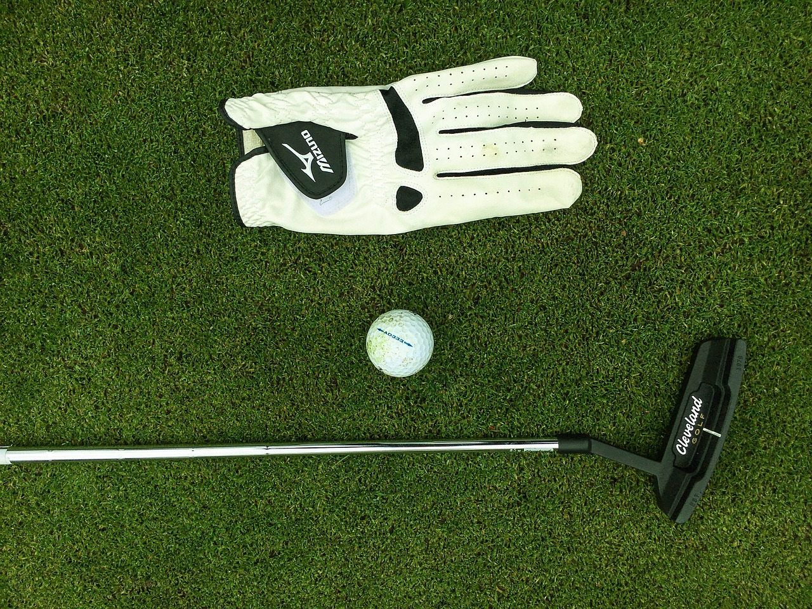

愛を込めて
あなたのゴルフを
サポート
会社説明テキストテキストテキストテキストテキストテキストテキストテキスト
キャディってどんなお仕事？
充実した研修制度があるから
未経験でも安心！
ゴルフのキャディといえば、みなさんどんなイメージを持ちますか？
ゴルフバッグを運んだり、クラブを手渡したりするイメージが多いかと思います。
キャディはその他にも実はこんなお仕事も含まれます。
▶︎プレイヤーへのアドバイス
▶︎精神面のサポート
ゴルフ規則（ゴルフの基本ルール）では、「規則にしたがってプレーヤーを助ける人」と定義されています。
キャディのお仕事（1日の流れ）
-
1
出勤・準備
派遣先のゴルフ場へ直接出勤！
指定された時間に間に合うよう、
時間に余裕を持って出勤し、
勤務先のスタッフへ挨拶します。
コースへ出るまでにゴルフバッグや手荷物を準備し、
カートに積み込みます。 -
2
お客様とコースへ出発
キャディは精神面のサポートも
重要なお仕事の1つ。
お客様へ明るくご挨拶！
気持ちよくプレイしていただけるよう、
丁寧な接客を心がけましょう。
プレイに合わせてクラブの受け渡しなどを行います。 -
3
コースの移動
使用したクラブや手荷物などを整理し、
カートに乗せたら、
カートを運転してコース間を移動します。 -
4

お客様へアドバイス
お客様のプレイを観察し、
適切なアドバイスを行います。ティーイングエリア
コースの案内、説明はキャディにとっては重要であると言えます。
特に池やバンカーなど注意しなくてはいけない場所を伝えます。フェアウェイやラフ
ボールの飛んだところまで移動し、残りの距離を伝えます。
「残り〇〇ヤードです。クラブどうなさいますか？」グリーン
斜や上り、下り、芝目を読みます。
読み通りになった時や、お客様のスコアが上がったときはとても気持ちいいです。 -
5
クラブの受け渡し
お客様にどのクラブを使うのか聞いて、お渡しします。
また、林に入った場合や、ラフが長くてボール探しの際には状況によりクラブを2.3本持ってお客様の元へ行きます。 -
6
バック積み下ろし、
クラブ確認コースから戻ってきたら、バックを積み下ろし、クラブの確認をします。
ヘッドカバーは合ってるのか、パターカバーは合ってるのかアイアンは間違いないか確認してお客様にサインをしてもらいます。
warning注意 メーカーが同じクラブは
特に注意が必要です！！
どうやってキャディになるの？
キャディ研修について
- 1 3日間座学をしてキャディの知識を勉強します。
- 2 先輩キャディとコースへ出てカートの使い方、コース説明の練習をします。
- 3 ある程度慣れてきて1人でできるようになればみきわめテストをします。
-
4
支配人やゴルフ場関係者と回り、最終テストを行います。
今までの学んだことをぶつける日です。
それに合格すればキャディへの道が開かれます。
先輩キャディの声
接客業なので大変なこともありますが、それ以上にお客様とともにゴルフを通して楽しくプレイができています。
最初は仕事を覚えるのは大変で、距離を測るのが難しかったですが、数をこなせば自然とできるようになりました。
覚えれば楽しく仕事ができ、自分自身が成長していることが日々実感できています。
ゴルフにあまり接点がなく、友人に誘われて仕事を始めましたが、遅くても14時頃には終わるので他に掛け持ちでアルバイトもできて時間を有効活用できています。
仕事を続けるうちに今ではゴルフに興味が湧き、ゴルフ仲間もたくさんできました。
自分にあったワークライフバランスが実現できる仕事の一つだと思うのでおすすめです！
私は9時に出勤して15時に退勤してます。
私には5歳の息子がいますが息子を見送ってから出勤しています。
主婦にも優しい職場なので嬉しいですね。
募集要項
- 給与：
- 日給 10,500円〜
- 勤務携帯：
- シフト制
- 勤務時間：
- 7時〜15時（実労働約5時間）、週3日〜OK
- 年齢：
- 18歳以上（高校生除く）
- 資格：
- 運転免許
- 勤務地：
- 茨城県坂東市、栃木県佐野市
Q&A
-
ゴルフ未経験でも大丈夫ですか？
未経験でも大丈夫です！誰でもできます！
-
休日はいつですか？
自分のスケジュールに合わせて自由にお休みが取れます！
-
学歴は関係ありますか？
18歳以上（高校生は除く）であれば学歴は不問です！
-
社内の雰囲気が知りたいです！
わからないことがあればすぐ聞いていただけるような環境を目指しています！
コミュニケーションは比較的取りやすいアットホームな職場です！ -
仕事で大変なことはなんですか？
ゴルフ未経験の方は最初は覚えることが多く大変かと思いますが、
わかるまで丁寧に教えていきますのでご安心ください！ -
研修制度はありますか？
ゴルフの基礎知識からカートの操作、クラブの出し入れ、コース案内など、 細かいところまで丁寧にお伝えします！